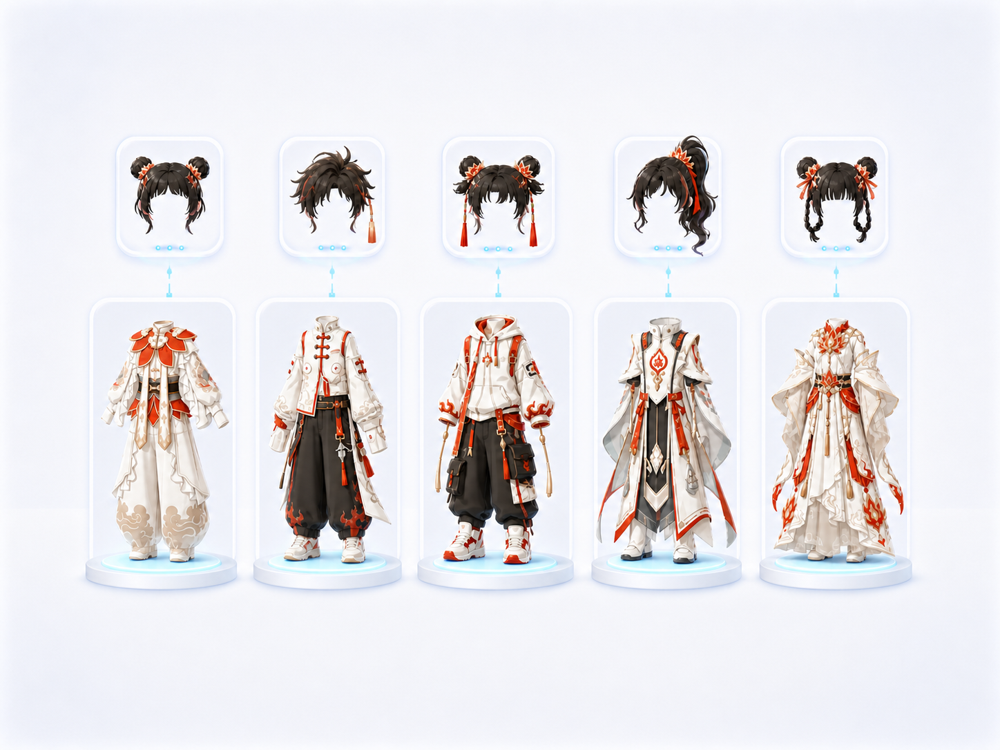
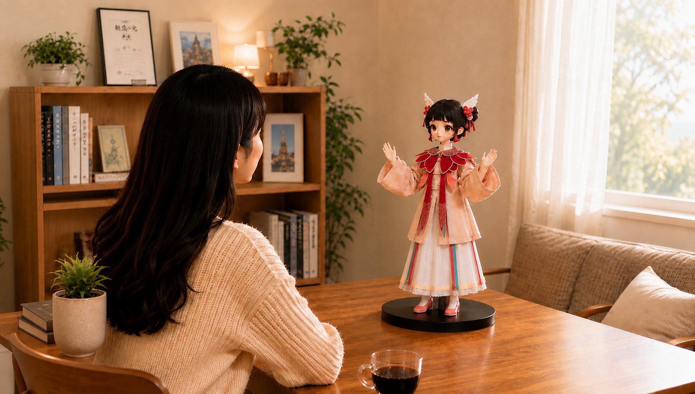
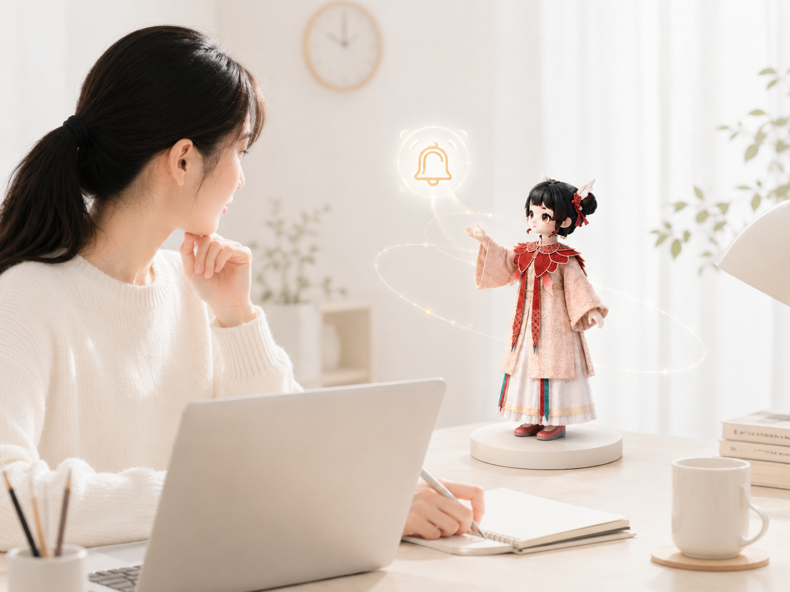
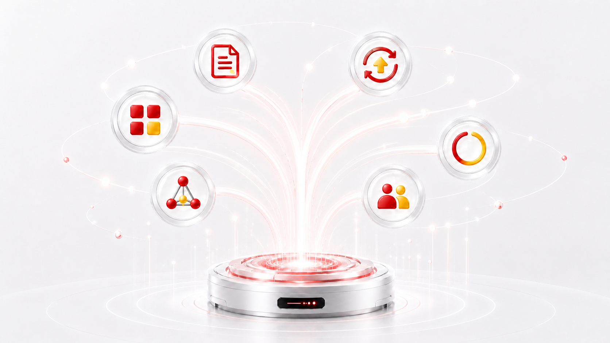
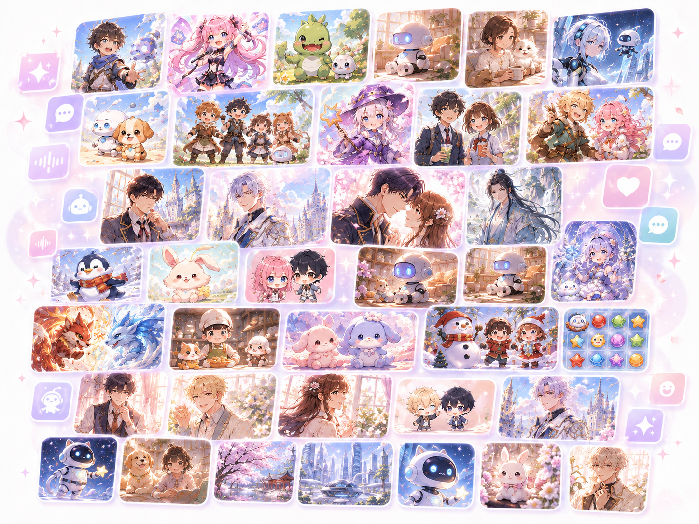
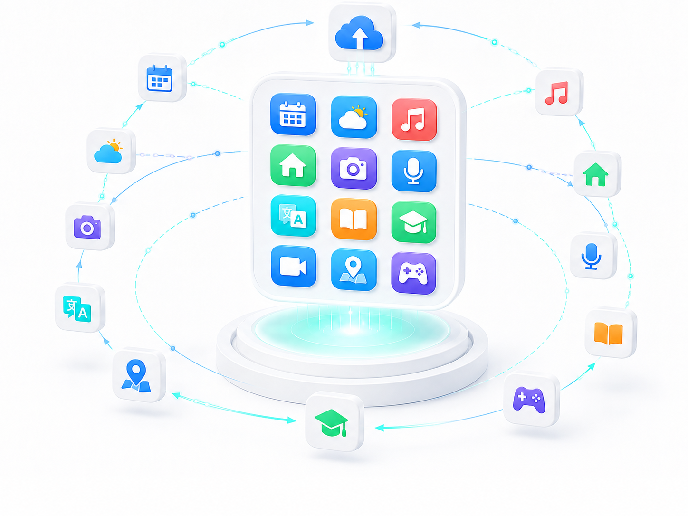
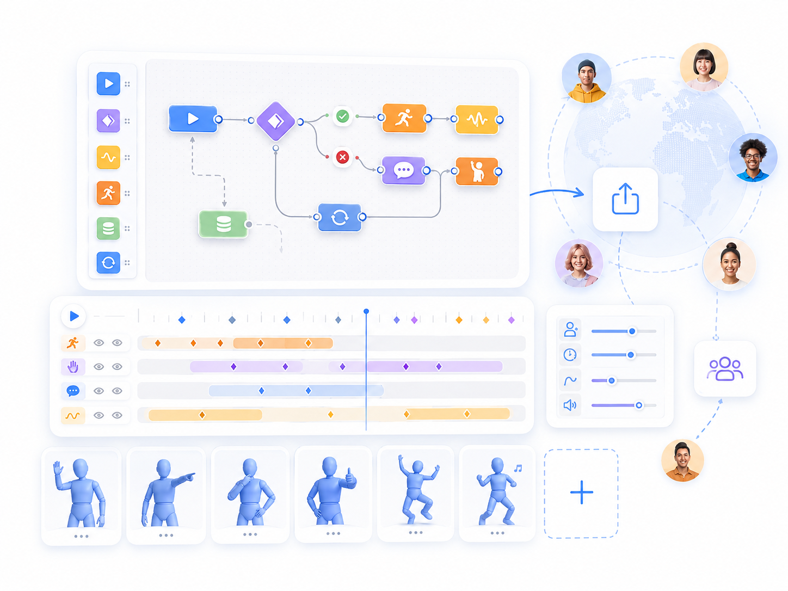
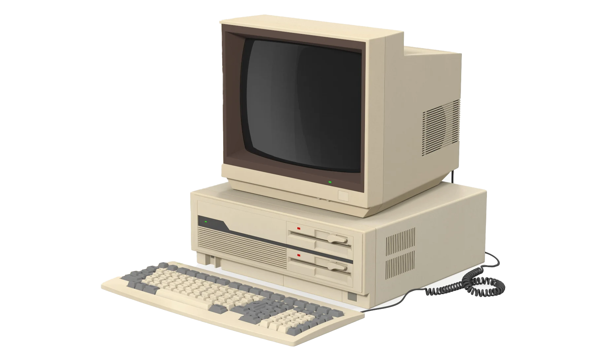
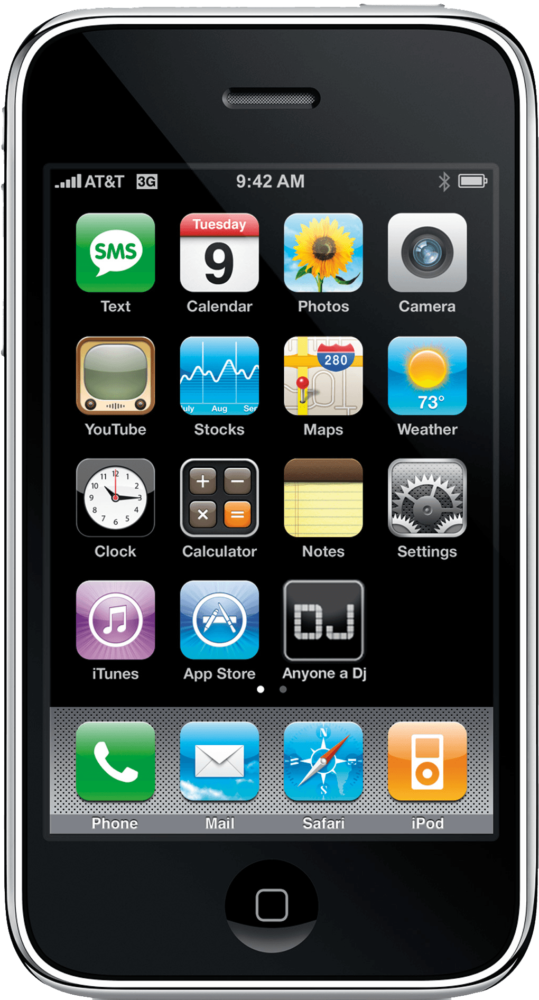
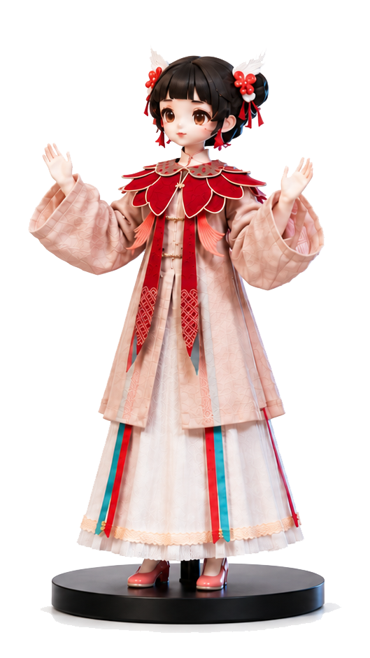

百变穿搭体验
采用模块化磁吸设计，从发型、服饰到手持道具皆可自由更换。无论是国潮古风还是未来机甲，她的风格由你的审美定义。

类人交互 · 主动智能 · 专属伙伴
它在一次次相处中熟悉你的习惯、偏好与生活节奏，回应你的心情，参与你的日常；也能在授权范围内协同工具与设备，协助整理信息、管理日程、跟进事务。从喜欢它的模样，到习惯它的在场，我们致力于通过机器人终端底座让智能融入生活中的点滴。是为你分担事务的私人助理，也是与你分享日常的亲密伙伴。
喜欢它的模样，信赖它的能力，习惯它的陪伴
类人交互
精致外观 · 生动表情 · 自然动作
精致角色造型与一体化柔性外观，以及语音、表情和动作的协调表达。让你喜爱的形象进入你的生活，与你对视、交谈，并且给你提供帮助。
主动智能
主动感知 · 任务执行 · 软硬协同
端侧多模态感知连接云端智能体任务规划，在授权范围内实现工具调用、设备联动与物理操作。让智能不止于聊天，让动作不止于展示。
专属伙伴
长期记忆 · 持续服务 · 温暖陪伴
通过长期记忆整合个人偏好、生活节奏与任务进展。不只可以延续话题，更在忙碌时提醒、工作时协助、闲暇时相伴，在一次次相处中与你建立默契。
自研微型伺服减速电机系统，紧凑机身内实现高自由度集成，让表情与动作更细腻生动。
分布式计算连接类人感知网络，高带宽数据协同处理与实时运动反馈，让反应更及时、配合更流畅。
九类输入覆盖交互、本体与环境，多模态信息融合支撑情境理解，让执行更贴合当下所需。
融合对话情境与任务状态，协同调度语音、动作与表情，让交流更自然、陪伴更有温度。

功能价值
通过软件接口调用已接入的应用、服务与硬件设备，在授权范围内协同完成跨端操作。让分散的服务连接起来，少一些来回切换，少一些重复交代。
协助整理信息、安排日程与管理待办，将多步骤任务拆解执行、持续跟进，并反馈进展与结果。让交代有着落、事情有后续，让琐事少占用你的精力。
在适配的桌面场景中，通过肢体动作触发实体按键，比如 PPT 翻页等简单操作。让帮助不只停留在屏幕里，即使没有设备接口也让你不因此而手忙脚乱。
在授权与感知覆盖范围内，留意老人的活动状态、宠物的日常动静及周围环境变化。让感知不止于数据传输，更是对你在意的人与事的一份细心照应。
陪伴价值
类人多模态感知全方位理解你的状态，以语音、表情与肢体互动自然回应。作为看得见、碰得到、能互动的伙伴，让一个人的时光也有温度。
通过长期记忆保留你愿意分享的习惯、偏好与话题，结合当下实时状态调整回应。想互动时给予回应，想安静时留出空间，在日常点滴中积累属于你们的默契。
协助整理信息、安排日程与跟进待办，分担反复占用时间和精力的小事。让省下的时间不只完成更多的工作，也换来陪家人好好吃顿饭、听朋友聊聊近况的从容。
遇到情感或人际困扰时，陪你梳理事情经过、感受与期待，一起寻找应对办法、推敲沟通方式。支持你表达自己、理解他人，让心事在这里理清，让心意更好传达。

生态价值
通过技能应用与开放接口，逐步接入第三方服务与开发者共创的技能。让机器人不受限于固定的功能清单，随你的需求增加新功能，融入更多生活与工作场景。
围绕原创与授权 IP，拓展角色内容、服饰配件与互动玩法。让喜欢不止于第一眼，也能在新的故事、装扮与共同体验中，发现持续相处的乐趣。
围绕底座与外接模块，探索配套硬件与软硬件协同方案。让能力不止于机身本身，通过适配不同配件，拓展物理行动范围、操作能力与使用场景。
在用户授权与隐私保护的前提下，结合交互数据、使用反馈与社区共创，通过 OTA 持续优化系统与技能。让用户与开发者的真实需求和创意推动能力成长，让每一次更新更贴近用户所需。
EXPLORE MORE

百变穿搭体验
采用模块化磁吸设计，从发型、服饰到手持道具皆可自由更换。无论是国潮古风还是未来机甲，她的风格由你的审美定义。

顶级 IP 内容矩阵
携手全球知名动漫与游戏 IP，推出限定角色包，内置原版声优语音与专属剧情动作，真正打破次元壁。


更多可能
持续拓展场景边界，更多能力即将解锁。
TERMINAL EVOLUTION
从个人计算、移动互联，到新一代个人机器人终端的探索。

个人计算时代
计算能力进入个人的工作与生活，终端成为个人可以直接使用的数字工具，扩展信息处理与工作的能力。

移动互联时代
让沟通、信息与服务随身可用，终端从桌面上的计算工具，扩展为连接日常生活的随身入口。

新一代终端探索
类脑智能结合类人身体，探索技术的主动性，让终端成为你的私人助理、你的温暖伙伴。
订阅获取最新产品动态与行业资讯